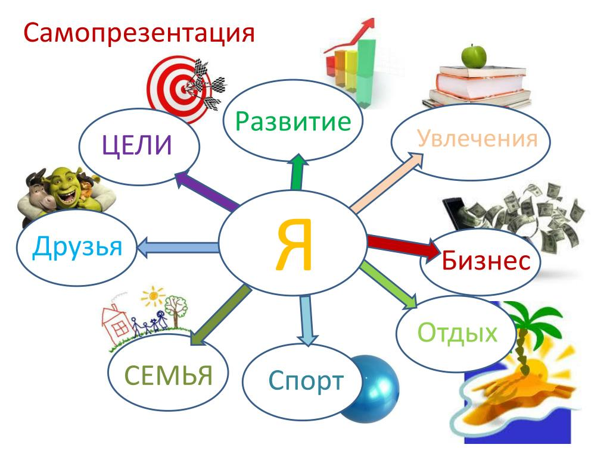

Существенные моменты самопрезентации
Каждая целевая аудитория подразумевает свои интересы и приоритеты. Поэтому, первым делом необходимо разобраться в
вопросе "а кому вы будете себя презентовать". В противном случае, самопрезентация уже на первых порах
пойдет "вкривь и вкось".
Вполне возможно, что вы можете и не знать человека (его привычки, предпочтения и тому подобное), однако понимание
хотя бы сути вопроса обсуждения уже позволяет узнать немало информации. Например, если речь о дизайне, то в
большинстве случаев клиентов мало интересуют сложные технические детали. А вот если речь о создании уникальных
программ для сложных вычислений, то подобные детали в приоритете.
Самооценка и личностный рост
Нужно составить некий текст (структуру, основные постулаты и прочее). Вот тут вам могут понадобиться две вещи.
Во-первых, нормальная самооценка, чтобы это не выглядело как "стеснительный человек, пытающийся дрожащим
голосом объяснить публике, что он супергерой".
Во-вторых, обилие полезной информации. Если же у вас с этим проблемы, то всегда существует выход — это
личностный рост. Как говорится, если поставить рядом два одинаковых мешка картошки, но к одному из них добавить
бесплатное долото, то этот мешок будет более ценным, даже несмотря на то, что долото редко кому вообще нужно.
Составляющие самопрезентации

© Перегуд Оксана Александровна